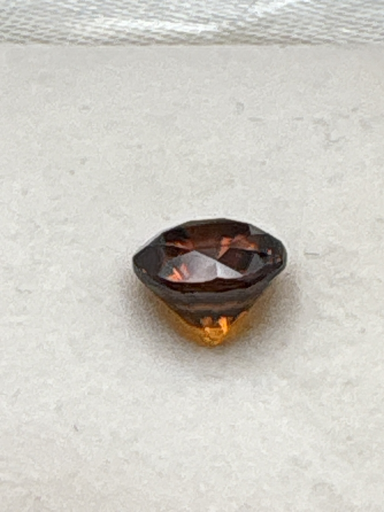

The Gem Drawer › No. 41

A deep reddish-brown marquise; “hyacinth” is the old trade name for this color.
| Catalogue no. | #41 |
|---|---|
| As labeled | Hyacinth Zircon (aka "Jacinth" - traditional name for reddish-brown/orange zircon) |
| Shape / cut | Marquise (navette) |
| Weight | 4 ct |
| Measurements | Not recorded |
| Colour | Deep reddish-brown |
| Clarity / condition | Not recorded |